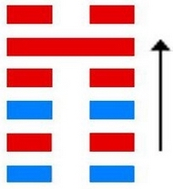
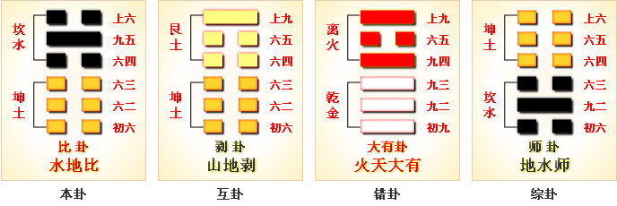

“比”指比较。
比（bǐ）卦的代号是0:2，主卦是坤卦，卦象是地，阳数是0；客卦是坎卦，卦象是水，阳数是2。
主卦和客卦的下爻和上爻都相同，中爻是一阴一阳，主方素质不佳，客方素质良好。 在休闲状态下，主方比较一下自己和客方，适当采取一些主动，可能对主方有益。
图中，红色表示当位的爻，天蓝色表示不当位的爻，箭头表示有应。
比卦卦象为五条阴爻系于九五，象征团结一心。
《杂卦传》云：“比乐，师忧。” 比者亲也，其字形为两人并坐，因为亲近，所以乐；师自争讼起，兵者凶器，所以忧。 比卦，水地比，诚信团结。
0:2水地比：坤为地，坎为水，地上有水。
水得地而蓄而流，地得水而柔而润，水与地亲密无间。
比者，辅也，密也。故比象征亲密比辅自然吉祥，
但应比辅于守持正固而有德的长者，择善而从。
【注解】
比：卦名，亲比，亲密的辅佐。
【释义】
此卦的卦名为比。
比卦展示“比”的形势下各种变化的可能性。
甲骨中的“比”字像两人步调一致，比肩而行的样子。
所以本义为为并列，并排之意。
前一卦为师，是打仗的意思，打仗胜利后，该开始治理国家了，
治理国家需要贤臣的辅佐，所以这一卦也有辅佐意思。
比：吉。原筮①，元永贞，无咎。
不宁方来②。后夫凶。
彖曰：比，吉也，比，辅也，下顺从也。
原筮，元永贞，无咎，以刚中也。
不宁方来，上下应也③。后夫凶。其道穷也。
《象》曰：地上有水，比。先王以建万国，亲诸侯。
【注解】
① 原筮：原来的筮辞。
② 不宁：不安宁。
③ 上下应：指九五爻与六二爻相应。
【释义】
经文意思是：比卦是一个吉祥的卦。
原来的筮辞是从开始便永远坚守正道，不会有灾难。
表示从不安宁的状态刚刚走出来，迟迟不来新比的人凶。
彖辞的意思是：比卦吉祥，比是辅佐、下顺的意思。
“原筮，元永贞，无咎”是因为九五刚健而中正。
刚刚从不安宁中走出来，是因为六二与九五相应。
迟迟不来亲比归顺的人凶险，是因为会无路可走。
象辞的意思是：
上卦为坎为水，下卦为坤为地，
地上有水便是比卦的卦象。
先王在这样的时势下，卦建万国，亲近诸侯。
这一卦反映了武王登基后，群臣辅佐治理天下的史实。
武王分封各诸侯后，与诸侯相亲，诸侯也与武王相亲，
武王有姜子牙、周公、南宫括等一班贤人佐助，使四海归顺，
而不来归顺的则会有凶险，因为会得不到武王的亲比，
如果武王兴师问罪，自然是有灭国的危险了。
有孚比之，无咎。有孚盈缶，终来有它，吉。
《象》曰：比之初六，有它吉也。
经文意思是：有诚信结交朋友不会有灾难。
有诚信就好比美酒满缸，诚信会吸引更多的众来与你交往，吉祥。
象辞意思是：处在最下层的初六广交朋友，会得到意外的吉祥。
初六处于比卦的最下层，严格来讲他还不能辅佐谁，
他只能广泛结交一些朋友，由于他的这些朋友与他一样，
都能一心辅佐九五，所以他会得到外的吉祥。
比之自内，贞吉。
《象》曰：比之自内，不自失也。
经文的意思是：亲善内部人员，坚守正道吉祥。
象辞意思是：亲善内部人员，会使自已不会受到损失。
六二处于下卦的中部得中又得位，又与九五相应，所以会吉祥。
作为大夫级别的他能够搞好统治阶级内部的团结，
并且坚守正道，一心辅佐九五的君王，所以不会有任何损失。
比之匪人。
《象》曰：比之匪人，不亦伤乎。
经文意思是：与盗匪结交。
象辞意思是：与盗匪结交，怎能不受到伤害呢？
六三则与六二不一样了，他无法与九五相应，因为有六四阻隔，
又无法与上六相应，因为同性相斥，而他面前的是一个坎卦，
坎卦为险为盗匪，所以六三有“比之匪人”的爻辞，
而其结果便可想而知了 —— 不亦伤乎！
外比之，贞吉。
《象》曰：外比于贤，以从上也。
经文意思是：结交外面的朋友，守正道则吉祥。
象辞意思是：结交外面贤明的人，是为了一起顺从九五君王。
六四位于君王之侧，得君王的信任，又以阴爻居于偶位，
他能够与下面的贤臣交往，并共同辅佐九五的君王，所以吉祥。
显比，王用三驱，失前禽，邑人不诫，吉。
《象》曰：显比之吉，位正中也。
舍逆取顺，失前禽也。邑人不诫，上使中也。
经文意思是：光明正大的交往，
君王用三驱之礼狩猎，结果失去前面的禽兽。
老百姓不惧怕君王，吉祥。
象辞意思是：光明正大的交往之所以会吉祥，
是因为九五保持中正。
舍弃叛离，客纳归顺，所以失去前面的禽兽；
百姓不惧怕君王，是因为君王以中正治国，平易近人。
君王亲比普天下的民众，以仁义之心治理天下。
他打猎时用三驱之礼，三驱之礼是说，
打猎时得到了一等猎物送到宗庙进行祭祀，
二等的猎物招待宾客，三等的猎物君王自已享用。
君王这样善待群臣，连老百姓见到他也不感到害怕，
这么贤明的君王，怎么会不吉祥呢？
比之无首，凶。
《象》曰：比之无首，无所终也。
经文意思是：结交不到首领，凶。
象辞意思是：结交不到首领，不会有善终。
上六处于比卦的最上面的位置，
可是下面的众阴爻都比亲于九五，
所以上六得不到众阴爻的比亲。
而他本为最上位，
又不能下来比亲九五，所以他的处境很凶险。
初六：有孚比之，无咎。
有孚盈缶①，终来有它②，吉。
《象》曰：比之初六，有它吉也。
六二：比之自内，贞吉。
《象》曰：比之自内，不自失也。
六三：比之匪人③。
《象》曰：比之匪人，不亦伤乎。
六四：外比之，贞吉。
《象》曰：外比于贤，以从上也。
九五：显比，王用三驱，失前禽，邑人不诫，吉。
《象》曰：显比之吉，位正中也。
舍逆取顺，失前禽也。邑人不诫，上使中也。
上六：比之无首，凶。
《象》曰：比之无首，无所终也。
【注解】
① 盈缶：盈，满；缶，瓦器，
圆腹小口，用以盛酒浆等。
② 有它：有意外的事。
③ 匪人：指行为不正当的人。
比卦上卦为坎为水，下卦为坤为地，地上有水便是比卦的卦象。
水在大地上流动，泥土因为有了水而湿润可以养育万物，这就像君王巡视四方，恩泽四方，群民与君王一条心，共同辅佐君王，而君王居安思危，能够严谨治国。
可见，这一卦确实是充满了喜悦与欢乐的。
地上有水，比；
先王以建万国，亲诸侯。
比之初六，有它吉也。
比之自内，不自失也。
比之匪人，不亦伤乎？
外比于贤，以从上也。
显比之吉，位正中也。
舍逆取顺，失前禽也。
邑人不诫，上使中也。
比之无首，无所终也。
比卦的卦画为一个阳爻五个阴爻，与师卦的卦画相似，只是排列顺序正好相反，师卦中的九二阳爻在比卦中来到了九五君位，象征君临天下，群臣辅佐。下面便通过卦象来对卦画进行具体的分析。
比：吉。原筮①，元永贞，无咎。
不宁方②来后，夫凶。
【白话】筮得比卦，占断为吉善。
初筮得到了元始长久之占，没有灾咎。
但不宁方迟到，这就要遭殃了。
【注释】
① 原筮：初筮，第一次筮占。
② 不宁方：不安宁的邦国。方，邦国。
【讲解】比卦告诫君主要与民亲善，
和睦相处，只有安定团结，才能吉善美好。
初六：有复比之，无咎。有复盈缶，冬来或池①，吉。
【白话】筮得比卦，占得初六，
只要诚心诚意与民亲比，终归没有灾害。
只要诚心诚意地装满盛酒的器皿，
就能积少成多，杯水积成池塘，终于吉善。
【注释】① 冬来或池：终于有池塘大水。
冬，借为终。或，有。
【讲解】这条爻辞告诫君主诚心诚意与民亲比，
亲比的方法是一个一个地亲近团结，由近及远，由少到多。
六二：比之自内①，贞吉。
【白话】筮得比卦，占得六二，
从内部开始亲密，就能团结一致，贞问吉善。
【注释】① 内：内部。
【讲解】“比之自内，贞吉”道出了亲比的程序和效果。
六三：比之非①人。
【白话】筮得比卦，占得六三爻，没有人可以亲比。
【注释】① 非：无。
【讲解】六三为阴爻居阳位。阴爻居阳位为失位。
六三与尚六无应，所以说“比之非人”。
六四：外①比之，贞吉。
【白话】筮得比卦，占得六四爻，
注意外部的团结，贞问吉善。
【注释】① 外：外部。
【讲解】六四爻辞与六二爻辞分别从内外两个方面，
阐明了内外亲比的重要性。
九五：显比，王用三驱，失前禽①，邑人不戒，吉。
【白话】筮得比卦，占得九五，
突出团结的重要性，象君王田猎用三驱礼那样，
来者不拒，去者不追，邑人不杀，就一定能够吉善。
【注释】① 王用三驱，失前禽：
比喻君王宽洪大量，降者不杀，奔者不禁，背敌不杀，
用仁爱恩惠建立起威信，是最好的亲比团结方法。
【讲解】这条爻辞告诫人们要宽洪大量，用仁爱恩惠团结教育人们。
尚六：比无首①，凶。
【白话】筮得比卦，占得尚六，
亲比而没有头脑，终归凶险。
【注释】① 首：头脑。
【讲解】比卦卦爻辞告诫人们要团结、亲善，
团结要有方法，要有头脑，否则同样会遭遇凶险。
比，吉也；比，辅也。
下顺从也。原筮，元永贞，无咎，以刚中也。
不宁方来，上下应也。
後夫凶，其道穷也。〔彖传〕
【白话】《彖传》说：
比，指亲密无间，团结互助，
吉祥的象征，下属顺从上级。
只要有诚意，不管怎么卜筮占问，能够辅佐有德行的长者，
长久不变地坚守正道，就不会有祸害。
如果没有诚意或有意不诚，必然凶多吉少，前途穷尽。
【原文】
（坤下坎上）比①：吉。
原筮②，元永贞，无咎。
不宁方③来， 后夫凶④。
初六：有孚比之⑤，无咎。
有孚盈缶⑥，终来有它⑦，吉。
六二：比之自内⑧，贞吉。
六三：比之匪人⑨。
六四：外比之⑩，贞吉。
九五：显比⑪。
王用三驱⑫，失前禽。
邑人不诫⑬，吉。
上六：比之无首⑭，凶。
【注释】
① 比是本卦标题。
比的本义是亲密，在本卦中为一词多义。
由于“比”字 多次出现，本卦用它来作标题。
全卦的内容主要讲交往和团结。
② 原筮： 再筮，指三人同时再占问。
③ 不宁方：不安宁的邦国，不愿臣服的邦国。
④ 后夫：迟到的诸侯。
⑤ 比：亲近、安抚。
⑥ 缶（fǒu）：瓦盆。 盈缶：用瓦盆装满酒饭。
⑦ 终来：即使。有它：有变故，有意外。
⑧ 比：团结一致。自内：自己内部。
⑨ 比：结党营私。匪人：不正派的 人。
⑩ 外：外部，外国。
⑪ 显：外，这里表示广泛。
⑫ 王用三驱：君王打猎时让卫队从左右后三面，
把猎物驱赶到中间以便射猎。
⑬ 诫： 用作“骇”，惊吓。
⑭ 比：互相倾轧。无首：没有头脑，指没有核心。
【译文】
比卦：吉利。三人同时再占问，占问长久吉凶，没有灾祸。
不愿服从的邦国来了，迟迟不来的诸侯要受罚。
初六：抓到俘虏，安抚他们。没有灾祸。
抓到俘虏，装满酒 饭款待他们。即使有变故，结果吉利。
六二：自己内部团结一致，贞兆吉利。
六三：与不正派的人结党营私。
六四：与外国结盟亲善，贞兆吉利。
九五：广泛亲善。君王打猎时三面包围，只留一面让猎物逃走。
邑中百姓毫不惊骇，吉利。
上六：小人互相倾轧，不能团结一心，凶兆。
【读解】
讲了战争，紧接着讲团结、外交。
古人真是聪明无比，深谙 “胡萝卜加大棒”的真谛。
真正能王天下的人，必定能抓住时机，
恰到好处地施展软硬两招，绝不会四面树敌，
把自己逼到火山口上，也不会不以实力为后盾而盲目亲善妥协。
团结和外交也是一门大学问。
上下左右，圈内圈外，国内国外，东西南北中，都要纳入视线之中。
对弱者，为其撑腰打气。
对叛逆，三面合围，给一条出路。
对强者，谦恭又不失节。
对君子，彬彬有礼，动口不动手。
对小人，威胁加利诱。
手腕众多，可操作性很强，可借鉴的历史经验也不少，
反正，要随机应变，灵活机动，
因时制宜，因地制宜，因人制宜，才能立于不败之地。
四海之内皆兄弟，普天之下皆王土。
讲团结，搞外交，请不要忘了这个道义上的准则。

比卦坎上坤下，为坤宫归魂卦。比为相亲相依附之意，长期如此，就会无咎，所以吉祥。
水行地上，亲比欢乐；人情亲顺，百事无忧。
得此卦者，可获朋友之助，众人之力，谋事有成，荣显之极。
这个卦是异卦（下坤上坎）相叠，坤为地，坎为水。
水附大地，地纳河海，相互依赖，亲密无间。
此卦与师卦完全相反，互为综卦。
它阐述的是相亲相辅，宽宏无私，精诚团结的道理。
大象：一阳统五阴，比邻相亲相辅，和乐之象。
运势：平顺，可得贵人提拔，凡事宜速战速决，不可过份迟疑。
比：表示兄友比肩而站，一片融合互持、比和之意。
主吉象。水溶入土中，胶和在一起，
是个很亲密的卦象，尤其是论男女之情。
事业投资有亲密的伙伴相助，
共同扶持打拼，事事当然顺利进行。
解释：平等、比合。
特性：勤劳，认真，善良，谦恭，务实，踏实，
重生活享受。异性缘多，感情烦恼也多。
运势：平顺可得贵人提拔，凡事宜速战速决，不可过份迟疑。
初六。有孚比之，无咎。有孚盈缶，终来有它吉。
《象》曰：比之初六，有它吉也。
初六：捕获俘虏，安抚他们，没有灾难。捕获俘虏，满盆满罐的酒饭招待他们。虽然可能有意外之患，但最后是吉利的。
《象辞》说：筮遇初六之爻，虽有意外之患，但最后是吉利的。
吉：得此爻者，会遇到知己，谋事称心如意。做官的会有意外之喜。
初六爻动变得第3卦：水雷屯。
这个卦是异卦（下震上坎）相叠，
震为雷，喻动；坎为雨，喻险。
雷雨交加，险象丛生，环境恶劣。
“屯”原指植物萌生大地，万物始生，充满艰难险阻，然而顺时应运，必欣欣向荣。
六二。比之自内，贞吉。
《象》曰：比之自内，不自失也。
六二：内部和睦团结，卜问得吉兆。
《象辞》说：内部和睦团结，就不会失掉民心。
吉：得此爻者，得贵人之助，营谋遂意。做官的会无过失，安然而吉亨。读书人或能成名。女命则会得贤夫。

六二爻动变得第29卦：坎为水。
这个卦是同卦（下坎上坎）相叠。
坎为水、为险，两坎相重，险上加险，险阻重重。
一阳陷二阴。
所幸阴虚阳实，诚信可豁然贯通。
虽险难重重，却方能显人性光彩。
六三。比之匪人。
《象》曰：比之匪人，不亦伤乎。
六三：跟败类狼狈为奸。
《象辞》说：跟败类狼狈为奸，不是很可悲吗？
凶：得此爻者，交友不慎，或有争诉，破财刑伤。做官的要谨防同僚不睦而造成不顺。女子则所嫁并非良人，破家丧身之象，不然则会争诉破财。

六三爻动变得第39卦：水山蹇。
这个卦是异卦（下艮上坎）相叠。
坎为水，艮为山。
山高水深，困难重重。
人生险阻，见险而止，明哲保身，可谓智慧。 蹇，跋行艰难。
六四。外比之，贞吉。
《象》曰：外比于贤，以从上也。
六四：跟外邦联盟亲善，卜问得吉兆。
《象辞》说：外部亲附于贤明的国君，像臣下服从君上。
吉：得此爻者，出外有利，多得知己之力，事事顺利。做官的会有升迁之喜。

六四爻动变得第45卦：泽地萃。
这个卦是异卦（下坤上兑）相叠。
坤为地、为顺；兑为泽、为水。
泽泛滥淹没大地，人众多相互斗争。
危机必四伏，务必顺天任贤，未雨绸缪，柔顺而又和悦，彼此相得益彰，安居乐业。萃，聚集、团结。
九五。显比，王用三驱，失前禽。邑人不诫，吉。
《象》曰：显比之吉，位正中也。舍逆取顺，失前禽也。邑人不诫，上使中也。
九五：普遍的和洽。君王采用三面包围的方法狩猎，网开一面，有意放走逃奔的野兽。老百姓对君王狩猎毫不惊惧。筮遇此爻吉利。
《象辞》说：普遍的和洽是吉利的，因为九五之爻处于上卦中位，像人守中正之道。放走向前奔逃的，猎取迎面奔窜的，这就是“失前禽”的缘故。老百姓对君王狩猎毫不惊惧，因为君王平时行事端正。
吉：得此爻者，会先逆后顺，谋事有成，无往不利。做官的会有大的荣耀。读书人会考的佳绩。

九五爻动变得第2卦：坤为地。
这个卦是同卦（下坤上坤）相叠，阴性。
象征地（与乾卦相反），顺从天，承载万物，伸展无穷无尽。
坤卦以雌马为象征，表明地道生育抚养万物，而又依天顺时，性情温顺。
它以“先迷后得”证明“坤”顺从“乾”，依随“乾”，才能把握正确方向，遵循正道，获取吉利。
上六。比之无首，凶。
《象》曰：比之无首，无所终也。
上六：小人朋比为奸，勾心斗角，无法形成一个团结的中心，这是非常危险的事。
《象辞》说：小人朋比为奸，勾心斗角，无法形成一个团结的中心，当然没有好下场。
凶：得此爻者，刑克有灾，人情淡薄，甚者恐有性命之忧。做官的会失去下属的支持，处境危难。

上六爻动变得第20卦：风地观。
这个卦是异卦（下坤上巽）相叠，
风行地上，喻德教遍施。
观卦与临卦互为综卦，交相使用。
在上者以道义观天下；在下者以敬仰瞻上，人心顺服归从。